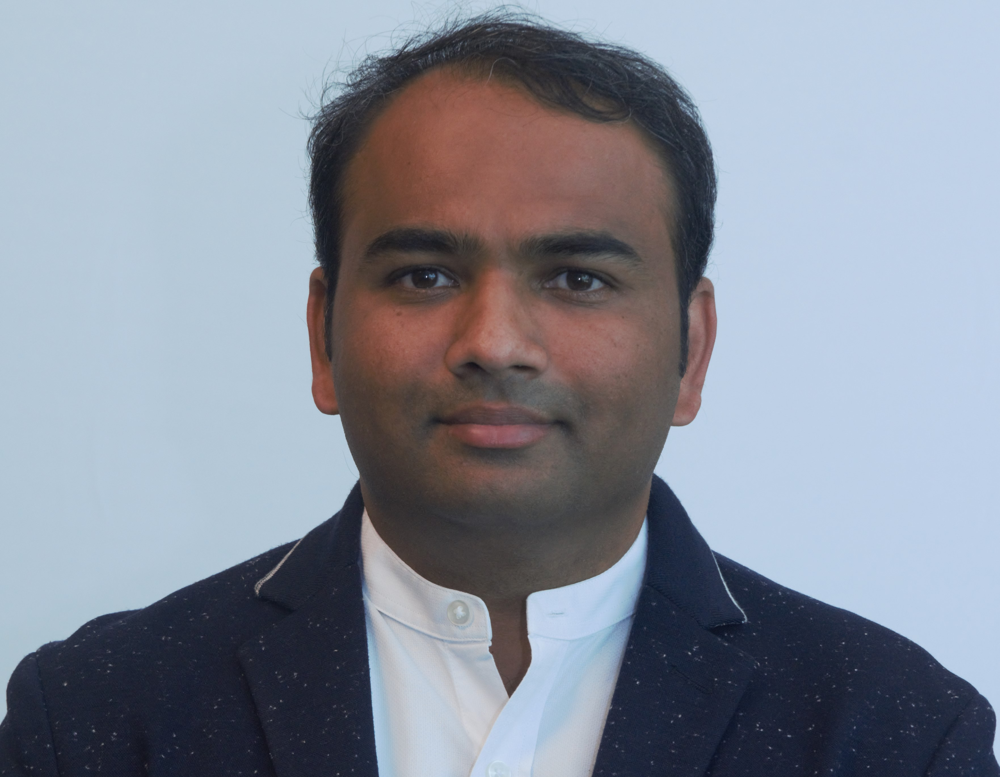

Rohit Kumar Subhash Hedaoo

Career objective:
Learn-Convert knowledeg into skill - Skill to expertise - pass on the knowledge - Learn.
Job objective:
Using over 19 yers rich experience of Renewable Energy in creating a conducive work
environment, successfully complete the project within the stipulated time, improving
customers and authorities' engagement and delight, in a manner that will improve knowledge
and skills.
Projects completed
- Worked on more than 15 Loads measurements (IEC 61400-13)
- Worked on ore than 150 Power performace measurements (IEC 61400-12-1)
- Worked on 6 Power Quality measurements (IEC 61400-21-1)
- Worked on 6 Noise measurements (IEC 61400-11)
- Worked on several Wind Resource Assessments
- Worked on several Technology review of Wind Turbines
- Completed over 50 Wind Turbine Inspection for due diligence
- Completed over 7 RCAs for fatal accidents on Wind Turbines
Present experience: September 2022 till date (+Two years):
Working with Envision as Wind Turbine Specialist - Platform Development Department.
- Project Management, International warranty projects, contract reviews and risk assessment,
Interaction with Third Parties and validate the results.
- RCAs of underperforming turbines, individual projects, and the fleet
- Development of Power performance and RCA tools using Python
Experience: June 2015 to August 2022 and May 2009 to May 2012 (Ten years)
Worked with DNV as Head of Section - Measurements
Responsibilities:
- Project Management
- Business Development
- Building local team, competence, and development plans to execute projects.
- Develop local QMS in-line with ISO/IEC 17025
- Preparation of proposals/contracts, risk assessment using Salesforce/Lead2Contract
- Review and Approval of reports
- Profit and loss (P&L) of individual projects and of the department.
- Technology review of wind turbines and Inspections
- Technical discussions with government authorities NIWE, CEA, MNRE
- Represent DNV in Technical Committees, Working groups and round robins.
- Wind Resource Assessment
- QHSE for the department
Experience: June 2012 to May 2015 (Three years Exp):
Worked with Wind World India Limited (formerly, Enercon India Limited) as Manager, Wind Resource Management.
Experience: Feb 2006 to April 2009 (Three years Exp, Wind Turbines):
Worked with Suzlon Energy Limited as Prototype Testing Engineer, carried out operations of prototype wind turbine.
Experience: July 2004 to December 2004 (Six months):
Training in Lloyds steel Industries, Wardha.
nextPage